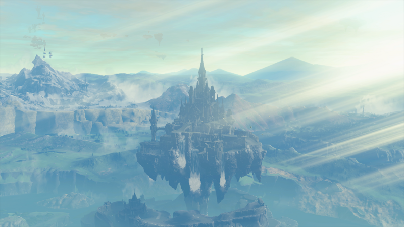
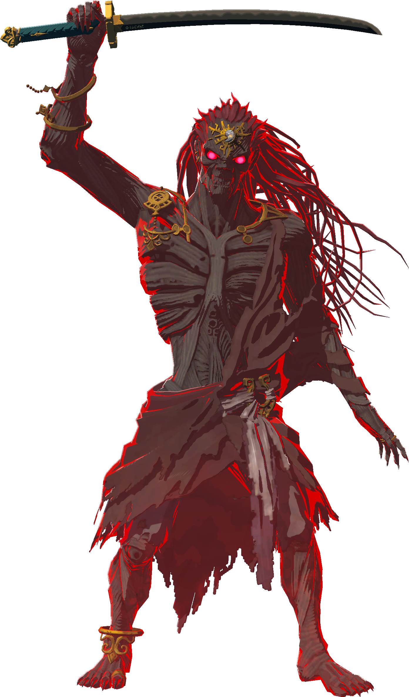

图：浮空的海拉鲁城堡——城堡升上天空，瘴气缠绕，前景就是第一门楼。
先说结论：这篇任务跨度很长
这篇任务从游戏前期就开始，一直拖到四座神殿全通。先是霍兹的搜索队、再是鸟望塔和四地调查，任务一直暂停；四神殿全通回监视堡垒，红月之下“塞尔达”现身浮空城堡，潜入城堡追踪幻影，到圣所打两波幻影加侬。
| 阶段 | 要做的事 |
|---|---|
| 第一段：搜索队 | 第一门楼找霍兹，“塞尔达”化光飞走 |
| 第二段：鸟望塔 | 回监视堡垒，拿滑翔伞、接四地调查（任务暂停） |
| 第三段：红月 | 四神殿全通回监视堡垒，“塞尔达”现身城堡 |
| 第四段：潜入 | 从空中进城堡，沿屋顶、图书馆、西墙往上 |
| 第五段：追踪 | 跟着“塞尔达”的幻影穿行城堡各层 |
| 第六段：圣所 | 两波幻影加侬，拿心之容器 |
接取与奖励
| 项目 | 内容 |
|---|---|
| 接取 | 完成前往海拉鲁王国后，在监视堡垒找普尔亚自动开始 |
| 位置 | 监视堡垒 · 海拉鲁城堡 · 圣所 |
| 前置 | 四座神殿全部通关，并回监视堡垒向普尔亚汇报 |
| 奖励 | 滑翔伞（前期）、心之容器（圣所战后）、魔王之弓、瘴气之剑、英杰服（城堡内厅） |
| 后续 | 开启寻找第五位贤者；本任务要等“来自太古的指引”完成才彻底结束 |
出发前准备
| 准备 | 说明 |
|---|---|
| 向阳草料理 | 幻影加侬的瘴气攻击削心心上限，向阳草能恢复 |
| 箭 | 多带，爆头打断铺瘴气 |
| 武器、弓、盾留空位 | 城堡里约 21 个宝箱，多是王族武器 |
| 攻击料理 | 圣所战用 |
| 四位贤者的誓言 | 带上，圣所战里能帮你分担 |
第一步：搜索队第一门楼
1任务一开始，普尔亚让你加入霍兹的搜索队，去城堡下面找塞尔达。
2在第一门楼找到霍兹和托伦：远处“塞尔达”现身，刚说上话就化成光飞走了。
3回监视堡垒向普尔亚汇报：她让你先去鸟望塔拿地图数据，顺便给你滑翔伞。
第二步：暂停去查四地异变
1鸟望塔扫完地图，普尔亚让你去查四地的异变，本任务就暂停了——不是卡住，是要等四座神殿全通。
2单座神殿打完不用回来，四座全通再回监视堡垒。
第三步：红月回监视堡垒
1四座神殿全通，回监视堡垒找普尔亚：她在望远镜那里，月亮变红了，浮空城堡上出现了“塞尔达”的身影。
2普尔亚让你去城堡查看，本任务继续。
第四步：潜入浮空城堡
1城堡浮在空中，从地面上不去：在第一门楼附近用左纳乌材料搭升降机（气球或风扇加火焰喷射器和电池），升到高处滑翔过去；也可以跳进海拉鲁城堡裂缝再滑翔上来。
2落到第二门楼一带，沿屋顶、图书馆、西侧城墙往上走；城堡后方屋顶上还有座神庙，顺手点亮。
3城堡里约 21 个宝箱，多是王族武器和盾，出发前先腾出位置。

图：浮空的城堡——从地面看高不可攀，得从空中上去。
第五步：追踪幻影到圣所
1进城堡就听见塞尔达的声音，一路跟着她的幻影穿行各层；幻影所到之处会冒出怪物群。
2一直跟到圣所（王座大厅），约在城堡中部偏北。
圣所决战：两波幻影加侬
1到圣所，“塞尔达”变出灾厄前的王座厅幻象，接着露出真面目：她是加侬多夫造的傀儡。
2加侬多夫把假塞尔达变成幻影加侬，开战：两波，先五具、再五具。
3第二波有一具会铺瘴气：瘴气一开始动，马上弓箭爆头打断它，再逐个击破；四位贤者誓言在身能帮你分担几具。
4打完拿心之容器；Boss 掉魔王之弓和瘴气之剑；内厅还有英杰服。

图：幻影加侬——圣所里的对手，弓箭爆头能打断它的冲锋与铺瘴气。
打完：回监视堡垒
回监视堡垒向普尔亚汇报：五位贤者还差一位，开启寻找第五位贤者。注意：本任务这时还没彻底结束，要等“来自太古的指引”完成才算完；要是你先做完了太古指引再来汇报，两个任务在会议结束时同时完成。
关键信息
| 项目 | 内容 |
|---|---|
| 第一门楼 | 霍兹搜索队；“塞尔达”化光飞走 |
| 鸟望塔 | 拿滑翔伞；任务暂停到四神殿全通 |
| 红月 | 四神殿全通回监视堡垒 |
| 潜入 | 第一门楼附近搭升降机；或跳城堡裂缝滑翔上去 |
| 圣所 | 约 (-0254, 1077, 0339)；两波幻影加侬，先五具、再五具 |
| 战利品 | 心之容器、魔王之弓、瘴气之剑、英杰服（内厅） |
容易翻车的地方
- 四神殿没打完就跑城堡——任务还暂停着，先打完四座神殿再回监视堡垒。
- 霍兹搜索队当成潜入——搜索队是四神殿之前的事，别和城堡潜入拼成一步。
- 城堡宝箱拿不下——出发前先腾武器、弓、盾的位置。
- 忘了带向阳草——瘴气攻击削心心上限，向阳草料理能恢复。
- 第二波乱打——先弓箭爆头打断铺瘴气那具，再逐个击破。
- 以为汇报完任务就结束——还要等“来自太古的指引”完成。
一句话总结
搜索队、鸟望塔、四神殿全通，红月之下潜入浮空城堡追踪幻影，到圣所打两波幻影加侬——假塞尔达的真面目是加侬多夫的傀儡，第五位贤者的线索也开了。